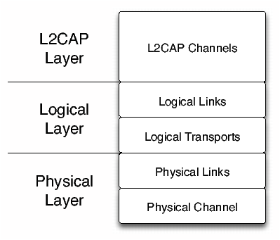
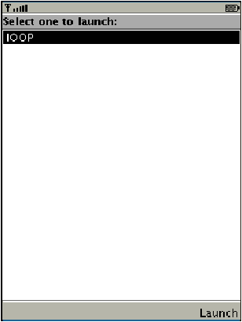
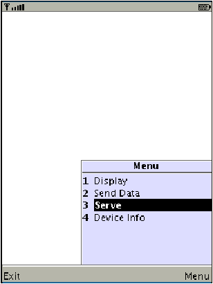
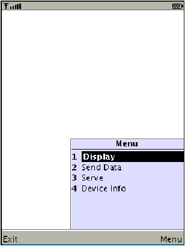
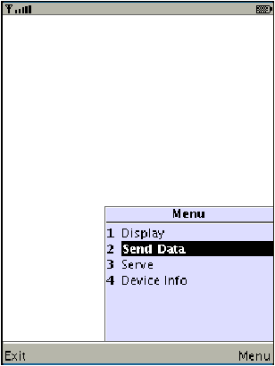
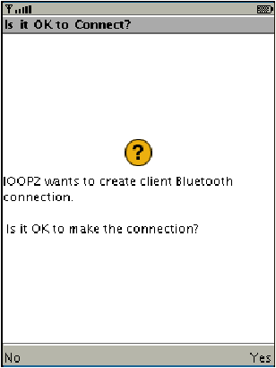
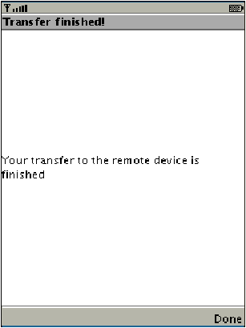

Die Daten�bertragungsraten sind abh�ngig von der Spezifikation bzw. der Bluetooth-Version des jeweiligen Produkts. Die �bertragungsrate hat sich w�hrend der ersten drei Versionen nicht gesteigert, sie wurde erst mit der Bluetooth-Spezifikation Version 2.0 erh�ht. Ein �berblick �ber die �bertragungsraten, sowie die grossen �nderungen/Probleme, der jeweilgen Bluetooth-Versionen ist in [Tab.: 2.2] dargestellt.
Klassifikation Reichweite Sendeleistung Klasse 1 100 m 100 mW Klasse 2 40 m 2.5 mW Klasse 3 10 m 1 mW Tabelle 2.1: Reichweiten der einzelnen Bluetooth Klassen (Vgl. : [Wik06b])
Der Datentransport innerhalb der Bluetooth-Architektur sowie s�mtliche Betriebsmodi folgen dem selben generischen Ansatz. Dieser generische Ansatz ist mit Hilfe einer Schichtenarchitektur realisiert, die in [Abb.: 2.1] dargestellt, und mit dem OSI-Schichtenmodell vergleichbar ist.
Bluetooth-Version Maximale Daten�bertragungsrate �nderung/Problem 1.0 und 1.0B 723.2 Kbit/s Enth�lt Sicherheitsprobleme 1.1 723.2 Kbit/s Indikator f�r die Signalst�rke hinzugef�gt Received Signal Strength Indicator (RSSI) 1.2 723.2 Kbit/s Adaptive Frequency-Hopping spread spectrum (AFH) eingef�hrt; reduziert Interferenzen mit anderen Funktechnologien (z. B. WLAN) 2.0 2.1 Mbit/s Etwa dreifache Daten�bertragungsgeschwindigkeit durch Enhanced Data Rate (EDR) Tabelle 2.2: Daten�bertragungsraten von Bluetooth (Vgl. : [Wik06b, Versionen])
Abbildung 2.1: Allgemeine Datentransport Architektur von Bluetooth (Vgl. : [Blu03, Architecture, S.25; PDF, S. 101])


Die Authentifizierung beider Ger�te erfolgt in zwei Schritten, das heisst es wird eine gegenseitige Authentifizierung beider Ger�te vorgenommen. In direktem Anschluss der Authentifizierung des Ger�ts A bei Ger�t B wird die Authentifizierung in entgegengesetzter Richtung vorgenommen10 (Vgl. : [Blu03, Security Specification, S. 758; PDF, S. 914]).
Entit�t Gr�sse Bluetooth Device Address (BD_ADDR) 48 Bit Privater Schl�ssel des Benutzers (Authentifizierung) 128 Bit Privater Schl�ssel des Benutzers (Verschl�sselung) 8-128 Bit Pseudozufallszahl (RAND) 128 Bit Tabelle 2.3: In Authentifizierung und Verschl�sselung involvierte Entit�ten (Vgl. : [Blu03, Security Specification, S. 749; PDF, S. 907 Tabelle 1.1])
Die Spezifikation des GAP besch�ftigt sich haupts�chlich damit, zu beschreiben, welchem Zweck die unteren Schichten des Bluetooth Protokollstapels dienen (LC und LMP). Um Sicherheitsbezogene Alternativen zu diskutieren, wurden ebenfalls h�here Ebenen mit einbezogen (L2CAP, RFCOMM und OBEX) [Blu03, Generic Access Profile, S. 181; PDF: S. 1129].Abbildung 2.2: GAP Schichtenmodell (Vgl.: Abbildung 2.1: Profile stack covered by this profile, S. 181 [Blu03])
Die spezifizierten Werte der Zugriffskennzeichner LIAC und GIAC sind auf der Bluetooth Homepage12 zu finden [Blu06].
Auffindbarkeitszustand Beschreibung Non-discoverable mode Ist das Ger�t in diesem Zustand, so kann es von einer Suchanfrage nicht gefunden werden. Ein Bluetooth-Ger�t in diesem Zustand wird als “Stilles Ger�t” (silent device) bezeichnet. Limited discoverable mode (LIAC) Das Ger�t ist f�r einen beschr�nkten Zeitraum oder bis zum Eintritt eines bestimmten Ereignisses auffindbar. Es sollte allerdings nicht l�nger als eine vordefinierte Zeit in diesem Zustand bleiben (timeout). Ist ein Ger�t in diesem Zustand, antwortet es auf Suchanfragen die den Limited Dedicated Inquiry Access Code (LIAC) verwenden. General discoverable mode (GIAC) Das Ger�t befindet sich in einem dauerhaft auffindbaren Zustand. Ist ein Ger�t in diesem Zustand, antwortet es auf Suchanfragen die den General/Unlimited Inquiry Access Code (GIAC) verwenden. Tabelle 2.4: Auffindbarkeitszust�nde eines Bluetooth-Ger�ts [M+05, Generic Access Profile, S. 189ff; PDF, S.1137ff]
Die J2ME Architektur folgt also prinzipiell dem in [Abb.: 2.4] dargestellten Aufbau. Die einzelnen Schichten der Architektur (CLDC [Kapitel 2.3] und MIDP [Kapitel 2.4]) werden im Folgenden genauer beschrieben.


User Permission G�ltigkeitszeitraum blanket G�ltig f�r jede Ausf�hrung der MIDlet-Applikation bis sie deinstalliert oder die Rechte vom Benutzer ge�ndert werden. session G�ltig vom Start eines MIDlets, bis zu dessen Termination. Der “session” Modus ist verpflichtet, den Benutzer beim oder vor dem ersten Aufruf einer gesch�tzten Funktion einen Dialog anzuzeigen, in dem der Benutzer entweder den Zugriff gestattet oder ablehnt. Bei einem erneuten Start des MIDlets muss diese Abfrage erneut erfolgen. oneshot Eine Interaktion mit dem Benutzer ist bei jedem Zugriff auf ein gesch�tztes API notwendig. Tabelle 2.5: G�ltigkeitszeitraum der Rechte eines MIDlets (Vgl. : [VW02, S. 26])
Eigenschaft Beschreibung bluetooth.api.version obex.api.version Version des Java APIs for Bluetooth wireless technology die unterst�tzt wird. F�r die Version 1.1 wird entsprechend “1.1” zur�ckgeliefert. bluetooth.l2cap.receiveMTU.max Maximum Transfer Unit (MTU) in Empfangsrichtung, die von L2CAP unterst�tzt wird. Der zur�ckgelieferte Wert ist dezimal in einem java.lang.String kodiert. bluetooth.connected.devices.max Maximale Anzahl verbundener Ger�te. bluetooth.connected.inquiry Kann eine Ger�tesuche durchgef�hrt werden, w�hrend das Ger�t bereits verbunden ist? bluetooth.connected.page Kann das lokale Ger�t eine Verbindung zu einem entfernten Ger�t herstellen, wenn das lokale Ger�t bereits verbunden ist? bluetooth.connected.inquiry.scan Kann das lokale Ger�t auf eine Suchanfrage antworten, w�hrend es mit einem anderen Ger�t verbunden ist? bluetooth.connected.page.scan Kann das lokale Ger�t eine Verbindung von einem anderen Ger�t annehmen, w�hrend es bereits mit einem anderen Ger�t verbunden ist? bluetooth.master.switch Ist der master/slave Wechsel erlaubt? bluetooth.sd.trans.max Maximale Anzahl zeitgleicher Dienstsuchen (Service Discovery) bluetooth.sd.attr.retrievable.max Maximale Anzahl der Service-Attribute die mit einem Service Record empfangen werden k�nnen. Tabelle 2.6: �bersicht der Eigenschaften des Ger�ts (Vgl. [M+05, S. 24, Tabelle 3-2 Device Properties])
Name Beschreibung Zul�ssige Werte Client oder Server master Gibt an, ob das Ger�t master der Verbindung sein muss. true, false Beide authenticate Gibt an, ob das entfernte Ger�t authentifiziert werden muss bevor eine Verbindung hergestellt werden kann. true, false Beide encrypt Gibt an, ob die Verbindung verschl�sselt werden muss. true, false Beide authorize Gibt an, ob alle Verbindungen zu diesem Ger�t authorisiert werden m�ssen um den Dienst zu nutzen. true, false Server name Der Name des angebotenen Dienstes, der in der SDDB gespeichert wird. Jeder g�ltige String Server Tabelle 2.7: G�ltige Parameter f�r RFCOMM Verbindungskennzeichner (Vgl. : [BJJ04, S. 59, Tabelle 4.1 Valid Parameters for RFCOMM Connection Strings])
Da das OBEX Protokoll �ber verschiedene Transportprotokolle verwendet werden kann, muss der String, der die Verbindung spezifiziert, das Transportprotokoll beinhalten. Die URL, um eine Verbindung zu einem entfernten Ger�t herzustellen, hat folgenden Aufbau:
Operation Beschreibung CONNECT Stellt die Verbindung zum Server her. PUT �bertr�gt Daten vom Client an den Server. GET �bertr�gt Daten vom Server an den Client. SETPATH �ndert das Arbeitsverzeichnis auf dem Server. ABORT Bricht eine PUT oder GET Operation ab. CREATE-EMPTY Erzeugt ein leeres Objekt mit dem im Header angegebenen Namen auf dem Server. PUT-DELETE L�scht das im Header angegebene Objekt auf dem Server. DISCONNECT Beendet die Verbindung zum Server. Tabelle 2.8: OBEX Operationen
Der Aufbau der Bibliothek ist relativ simpel gehalten. Das >>oop<< Paket beinhaltet lediglich das Interface der Bibliothek sowie die Konstanten. Das >>util<< Paket beinhaltet Klassen, die zur Realisierung der Bibliothek notwendig waren. Das >>impl<< Paket beinhaltet diejenigen Klassen, welche die �bertragung der Daten letzten Endes realisieren. Das >>exceptions<< Paket enth�lt die von der OOP Bibliothek definierten Ausnahmen. Die Funktionalit�t der Klassen der jeweiligen Pakete wird im folgenden erl�utert.
Durch Implementierung des IObexObjectPassing Interfaces ist zus�tzlich eine einfache Weiterverarbeitung der Daten m�glich, sollen diese persistent auf dem Ger�t gespeichert werden. Begr�ndet werden kann dies durch die Limiterung, welchen den mobilen Endger�ten auferlegt ist. Da sie laut der CLDC keine Kenntnis eines Dateisystems vorweisen m�ssen18, ist ein alternativer Mechanismus im MIDP zur Verf�gung gestellt worden; das RMS19. Lese- und Schreiboperationen auf das RMS k�nnen jedoch ausschliesslich in Byte-Str�men durchgef�hrt werden. Durch die Implementierung der IObexObjectPassing Schnittstelle sind die Entit�tsobjekte bereits auf diese Aufgabe vorbereitet. Auf den Umgang mit dem RMS soll an dieser Stelle jedoch nicht n�her eingegangen werden20.
„Es werden funktionale Abstraktionen in Form von Operationssignaturen bereitgestellt, die das >>Was<<, aber nicht das >>Wie<< festlegen. Eine Schnittstelle besteht also im Allgemeinen nur aus Operationssignaturen, d. h. sie besitzt keine Operationsr�mpfe und keine Attribute. Schnittstellen k�nnen jedoch in Vererbungsstrukturen verwendet werden. Eine Schnittstelle ist �quivalent zu einer Klasse, die keine Attribute und ausschlie�lich abstrakte Operationen besitzt.“ [Bal00, S. 817]Da in der Java Programmiersprache allerdings der Mechanismus der Mehrfachvererbung nicht vorgesehen ist, w�re die Modellierung als abstrakte Basisklasse f�r den Programmierer unvorteilhaft gewesen, da eine Schnittstelle, im Gegensatz zur abstrakten Basisklasse, auf n-ter Stufe der Erbhierarchie implementiert werden kann, wohingegen die abstrakte Basisklasse an der Wurzel der Erbhierarchie implementiert werden m�sste.
Die Klassen ObjectPusher, ObjectReceiver und BulkObjectPusher aus [Abb.: 3.5] stellen dabei die in [Abb.: 3.4] als Concrete Subject bezeichnete Klasse dar.
Die Funktionalit�t der im >>impl<< Paket enthaltenen Klassen ist folgende:
Nach der Erzeugung des ObjectPusher Objekts ruft es, durch die interne Thread-Erzeugung, die Methode run() auf, in der die eigentliche Arbeit des Objekts verrichtet wird.
Die Testreihe konnte auf Grund mangelnder Hardware nicht auf zwei reale Mobiltelefone ausgedehnt werden. Der Versuch mit Hilfe der Bibliothek Daten von einem Laptop auf ein Mobiltelefon zu �bertragen, schlug ebenfalls fehl. Das entfernte Ger�t konnte weder vom Laptop noch vom Mobiltelefon aus gefunden werden.
Testbeschreibung Erwartetes Ergebnis Test Erf�llt Es wird versucht ein Objekt zu �bertragen, dass die Schnittstelle IObexObjectPassing nicht implementiert. Die �bertragung wird abgebrochen. Ja Sind die Daten am Empfangsger�t korrekt rekonstruiert worden? Korrekte Rekonstruktion der Daten. Ja Es existieren zwei Ger�te auf denen der Server ObjectReceiver gestartet wurde. Die Implementierung informiert den Anwender, dass mehrere Ger�te verf�gbar sind. Nein26 Es wird versucht zu senden, jedoch ist am Empfangsger�t keine ObjectReceiver Instanz erzeugt worden. Die Methode OOPFinder.getConnectionURL() liefert null. Ja Wird nach einer abgelehnten Verbindung durch das BCC eine erneute R�ckfrage an den Benutzer gestellt? R�ckfrage wird erneut gestellt. Nein27 Besteht die M�glichkeit ObjectReceiver und BulkObjectPusher parallel auf einem Ger�t zu instanziieren? Beide k�nnen parallel gestartet werden. Ja Tabelle 3.1: W�hrend der Entwicklung durchgef�hrte Testf�lle
Die Struktur des Zustandsautomaten wird im Code durch die an den Zustand�berg�ngen in [Abb.: 4.1] annotierten Methoden realisiert. Das Betriebssystem ist dadurch in der Lage beim Eintreffen eines externen Ereignisses, wie z. B. einem eingehenden Anruf, die Methode pauseApp() aufzurufen, durch die das MIDlet bis zu Fortf�hrung pausiert wird. [Listing 1] zeigt ein einfaches „Hello World“ MIDlet um den Sachverhalt zu verdeutlichen.
Die [Abb.: 4.2] zeigt den Flow Designer f�r ein „Hello World“ Projekt. Wie zu sehen ist, verbindet man den Startpunkt der Applikation direkt mit der nach dem Start des MIDlets anzuzeigenden Form. Wird der mit Exit beschriftete Button des MIDlets gedr�ckt, terminiert die Applikation. Die Handhabung der Netbeans IDE, bez�glich der Applikationsentwicklung im J2ME Umfeld, soll an dieser Stelle nicht weiter vertieft werden4.
Da innerhalb der Applikation keine M�glichkeit besteht die zu �bertragenden Daten zu manipulieren bzw. zu setzen, werden die Daten innerhalb des Programmcodes direkt zugewiesen. Die Konfiguration eines Person Objekts, das die Schnittstelle IObexObjectPassing implementiert, erfolgt wie in Listing [Listing 2] gezeigt. Das Beispiel zeigt wie zwei Person Objekte konfiguriert, und anschliessend mit der Klasse BulkObjectPusher versendet werden k�nnen.
[Auf beiden Telefonen muss zun�chst das Programm mittels “Launch” gestartet werden.]

[Anzeige nach dem Programmstart.]
[>>1<< Der Server muss gestartet werden.]

[>>1<< Der Start des Servers muss einmalig best�tigt werden, da ein Zugriff auf das Bluetooth API erfolgt.]
[>>1<< Die vorhandenen Daten sollen angezeigt werden.]

[>>1<< Es sind keine Daten verf�gbar, mit “Back” verlassen]
[>>2<< Daten sollen �bertragen werden.]

[>>2<< Zum senden “Send” w�hlen.]
[>>2<< Der Zugriff auf das Bluetooth API muss einmalig best�tigt werden.]

[>>2<< Die �bertragung wird best�tigt, mit “Done” verlassen.]

[>>1<< Empfangene Daten k�nnen angezeigt werden.]
Abbildung 4.4: Ablauf der Beispielapplikation
Als n�chstes zeigt sich einem der Dialog aus [Abb.: A.2], in dem man einen Projektordner, sowie einen Namen f�r das Projekt spezifiziert. Die Erzeugung des „Hello MIDlets“ kann deaktiviert werden, bleibt jedoch in diesem Beispiel aktiv.
Der Dialog kann jetzt mit einem Klick auf „Finish“ beendet werden. Anschliessend zeigt sich einem [Abb.: A.3].
Nachdem die Applikation erzeugt wurde, wird gem�ss der Projektorganisation aus [Kapitel 4.2] eine Entit�sbibliothek erzeugt. Durch die Tastenkombination >>Strg+Shift+n<< wird erneut der „New Project“ Dialog ge�ffnet. Diesmal f�llt die Auswahl jedoch auf „Mobil“→„Mobile Class Library“, wie in [Abb.: A.4] zu sehen ist.
Man spezifiziert f�r die Bibliothek, wie in [Abb.: A.5] gezeigt, ebenfalls einen Namen und einen Projektordner und beendet den Dialog mit einem Klick auf „Finish“.
Der vorzufindene Arbeitsplatz sieht nun aus wie in [Abb.: A.6] dargestellt.
Als n�chstes muss die OOP Bibliothek Netbeans bekannt gemacht werden. Dies geschieht �ber den „Library Manager“ der durch die Tastenkombination >>Alt+t+l<< ge�ffnet werden kann. In dem folgenden Dialog selektiert man „Mobile Libraries“, und klickt auf „New Library“, woraufhin ein neuer Dialog erscheint, in dem der Name der Bibliothek eingetragen werden muss (siehe [Abb.: A.7]).
Ist dieser Schritt abgeschlossen muss der Bibliotheksbezeichnung noch ein Java-Archiv (JAR) hinzugef�gt werden. Dies geschieht durch einen Klick auf „Add JAR“. In dem aufkommenden Dialog muss nun die JAR-Datei der OOP Bibliothek von dem lokalen Dateisystem gew�hlt werden (ObexObjectPassing.jar). Ist dieser Schritt abgeschlossen, zeigt sich einem [Abb.: A.8]
Die Bibliothek ist Netbeans nun bekannt und kann in den der IDE bekannten Projekten verwendet werden. Die Bibliothek muss zun�chst dem Entit�tsprojekt zugeordnet werden. Dazu klickt man mit der rechten Maustaste auf das Entit�tsprojekt, und selektiert, wie in [Abb.: A.9] gezeigt „Libraries & Resources“. Dort ordnet man die Bibliothek mit einem Klick auf „Add Library“ dem Projekt zu.
Nachdem die Bibliothek mit einem Klick auf „Add Library“ und „Ok“ hinzugef�gt wurde, muss die Entit�tsbibliothek dem J2ME Projekt zugeordnet werden. Dazu w�hlt man , nach einem Rechtsklick auf das J2ME Projekt „Properties“→„Libraries & Resources“. Das Entit�tsprojekt kann nun, mit einem Klick auf „Add Project“ vom lokalen Dateisystem gew�hlt werden (siehe [Abb.: A.10]).
Damit die OOP Bibliothek auch in der J2ME-Anwendung zur Verf�gung steht muss sie, nach dem obligatorischen Rechtsklick, und der Wahl von „Properties“→„Libraries & Resources“, mit der Selektion von „Add Library“ hinzugef�gt werden.
Nach einem Klick auf „Add Library“→„Ok“ ist die Bibliothek korrekt in das Projekt eingebunden worden. Ab diesem Zeitpunkt kann entwickelt werden.
|
|
This document was translated from LATEX by HEVEA.